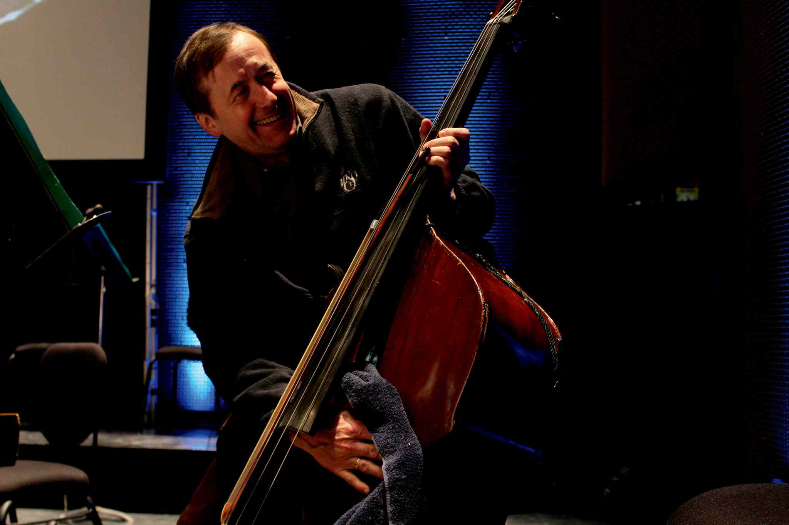

|
|
Zdzislaw
Prochownik email; prochownik@outlook.com or prochownik@hotmail.com
|

{kind=link}
Dear Potential Customer:
For the last twenty five years I have
earned my living as a professional
bassist on the first stand of three major Canadian orchestras.
Always fascinated with the properties of a good bow, I began to experiment with
various styles and was in touch with the bow making industry at large.
Encouraged by numerous successes at bow making as a hobby, my
interest intensified in 1991 as a result of my study with Jean Grunberger in
France.
My bows are somewhat different than
those commonly seen on the market. When making a bow, I concentrate on focus: a
direct, clean, penetrating sound, with a very quick
response in mind. For players who are used to more heavy bows, this may feel
strange at first, but after a short adjustment period it can be seen that
heavier bows generally do not have the sensitivity and immediate response that
lighter bows do. Why fight velocity, gravity, and risk hand injury when you can
achieve more with less effort?
All of my bows have a big arch and are
very flexible in character. Designed to be pulled horizontally with minimal
pressure, they require a smaller than usual tightening distance between the
stick and hair. Each bow uses wood carefully selected from the best Pernambuco
available, and are tested with ultrasound waves for strength and flexibility.
Keeping functionality in mind as the first , most important requirements, bows
are silver mounted and individually balanced for maximum results, each of them
providing excellent string contact as well as clarity in "off string" playing.
All French style bows come with a thumb rubber to aid in comfort.
When testing my bows, I recommend
comparing them with others by playing a variety of difficult passages, as well
as listening to comparisons, if possible, from a suitable distance.
I use only the finest quality
Canadian white horse hair which I find offers the best grip. All bows are
tested under professional symphony orchestra conditions prior to shipment.
At this time I do make 3 kind of French model bows:
Solo - hair length of about 55 cm , more
bend and a little stiffer piece of wood, very rigid, nervous, bright and
extremely responsive and weight between 125 and 130 grams . Hair and the bow
feel very stiff. Usually excellent for solo or fast Mozart passages etc. plying.
Sound is rather lean.
General-use - hair length of about 55
cm, less bend and hair a little more loose which gets you a little more air in
the sound and a feel of bigger sound but somewhat loose at extreme and of
response and quickness. Bows weights are between: 125g - 135g
Sartory - -They are 3/4 inch shorter and
have more distance between hair and stick. My friends call them "Sartory with a
attitude" They are kindlier and gentler and weight around 125-130 grams
 The French bows - similar to Sartory and Vigneron models (135 -150 grams) made
from Massaranduba wood.
The French bows - similar to Sartory and Vigneron models (135 -150 grams) made
from Massaranduba wood.
All 4 French models are good but it depends on the style you play. I prefer to first consult my customer before beginning work on his /her order. All German models bows have a hair length of about 55 cm and weight between 115 and 130 grams
Price:
All bows are guaranteed to outperform
your existing bow or your money fully refunded.
These bows are presently being used in many major symphony orchestras in North America, Europe, Australia, Brazil and Tasmania, as well as with many graduate students of Paul Ellison, Francois Rabbath and many other recognized teachers.

"BRAVO! " - Francois Rabbath 1995
"I enjoy using your bow very much.
Sixteenth-note passages seem easier to play with more clarity of pitch
and articulation." - Clifford Spohr, Principal Bass, Dallas
Symphony Orchestra 1993
"Bows which do all tricks." - George Vance, Washington
"Z. Prochownik understands bass and the bass
bow. I've played at least fifteen of his bows, both German and French
models, and many of them are as good as anything I've played on. He
understands balance and tension in the stick and how to fine tune an
individual piece of wood. He reworked my award-winning Nuedorfer and
actually improved its performance. My other bow is a Prochownik." - Eric
Hansen, Principal Bass, Winnipeg Symphony Orchestra 1994
"My other bow is a Sartory." - Stan Label,
Assistant Principal Bass, Winnipeg Symphony Orchestra 1993
"Your bows are the best new bows I've tried."
- Betty Girko, Dallas Symphony Orchestra 1994
"Thank you for your incredible craftsmanship
and most amazing German bow I have ever played." - David Moore, Los
Angeles, CA 1993
"The bow is beautifully made and I really enjoy playing with it." - Angela
Schefield, London, England 1990
"The bow is well made from an excellent piece of wood, draws a fine sound,
and has a very good response and balance." - Jan
Urke, Principal Bass, Edmonton Symphony Orchestra 1991
"I can't tell you how much I enjoy playing
with your bow."- Jeff Hall, Dallas, TX 1995
"Thank you for the wonderful bow." - E.
Browning, Perth, Australia 1995
"I like the bow and I am looking forward to
getting another." - Thomas Lederer, Co-principal, Dallas Symphony
Orchestra 1995
"It suits my playing and is a fun alternative
to my Grunberger and Victor Fétique!" - Jean Michon, Québec Symphony
Orchestra, double bass teacher at Conservatoire de musique de Québec 1996
"Good loud and full sound! Every note is easy to play, spiccato is perfect." - Barbe Thierry, solo bassist, Opéra Bastille, Paris 1996
"The Prochownik bows which I use, and won a
position in the Wiener Philharmoniker with, allow me the most detailed
articulations, while guaranteeing a full sound and precise string contact in
the most delicate musical moments. They are equally excellent in the large
repertoire of the Weiner Philharmoniker from Donizetti to Berg." Bartosz
Sikorski-2001
“I
purchased a bow from you about two years ago. I am extremely pleased with it
and everyone who tries it out thinks it is incredible”.
Bill Bentgen
Cross Junction, Virginia 2001
“The bow is fantastic.” Enzo Figliuzzi , Vancouver 2002
“The tone that the three bows produced on my bass was amazing. The 126 brought the low tones out of my bass and did not over highlight the highs. It all also sounded good in orchestra as well as solo playing. I am very happy with it”.
A.J. Topp, Tampa FL 2002
"I am really happy to inform you that after 4 years looking for a bow, I have finally found it! I really like the bows you sent me, specially one of them, so I'm buying it." Jose A. Luque Osuna Spain 2003
" I still can't believe the tone it gets out of my bass. It's like I went out and bought a whole new bass!" Matt Stromberg Kearney NE USA 2004
"It has transformed my playing and I'm so happy with it, it's perfect for both solo and orchestral playing! Best wishes and many thanks, Nicki Davenport" UK 2004
"With my bass, your bow sounds wonderfully clear, I love the way it draws over the string, it feels amazing from tip to frog, it bounces incredibly and has a wonderful punch to it and the list goes on." Jordan O'Connor Toronto 2007"
"The Sartory is simply a pleasure to work with, playing with it is practically effortless! My bass has never sounded better! I will definitely be recommending your bows to my friends!" Patrick A. Montreal 2007
"Hi ! I'm still in the National Symphony here in Dublin, very pleased with the bow I purchased 2 years ago".. Edward Tapceanu 2007
"I really love it and it fits well in the hand and gets a great tone from both my basses! Thanks - it's really a great piece of craftsmanship." L. Fantasia L.A USA 2008
"I currently use a "master" old French bow and to be very honest and serious your bows sound better and are easier to play" Calvin Marks. Toronto 2008
"The bow I like most is one of the most responsive and articulate bows I have ever played - bravo" - David Odegaard Texas 2008
"As I thought, the bows are wonderful, the light one it's incredible precise and the 124-126 grams full of harmonics, all of them suitable for every piece, from solo to orchestra playing. Thank you very much for your excellent art." il primo contrabbasso della "Orquesta Sinfónica de Galicia" Spain -2009.
"I did a couple of Messiahs last week, and, apart from the aching back, enjoyed them thoroughly. Your bow worked marvelously, so much control, spiccato, even at the tip, the bow felt really long, which meant to me that it is much more usable at the tip. My long tones felt longer, everything is great. People even are commenting on the different sound. This is the sound as opposed to the Sartory I have been using for 38 years. Thank you so much for the beautiful hand made bow". Jack McFadden, Ontario, Canada 2009
" I gotta tell you, I immediately loved the bow. It's made from beautiful wood and is much lighter than my present bow (153g). From behind my bass, I thought it was quieter than my other bow. But, after my last orchestra rehearsal, our principal cellist came back and asked me if I was playing a new bass, because I sounded so much better. I told him I was auditioning a new bow an he stood out front and had me switch back and forth between the 126g Purpleheart bow and my old one. Out front, your bow projected much more, was louder, had more harmonic content, sounded fuller, and made my other bow sound "nasal" in comparison. I am quickly getting used to the lighter bow, and feel like I can play longer without fatigue, and that I can play challenging passages easier (I'm currently working on Beethoven's 9th)." Russell Bergum Virginia, MN 2010
"I love the bow. It is a joy to play and exactly what I was looking for. Multiple people said if I didn't buy they would " Steven Fox Columbus OH. 2012
"A professional and accomplished colleague joined me to listen and play on bows. There were 6 bows in the mix- widely varied in size and shape. The Prochownik bow drew a sound similar in power and inflection to a bow that weighed 10 grams more- the biggest bow we had in the mix. As I was playing the Prochownik bow, my colleague described it as "Effortless!" Of all the bows I demonstrated, the Prochownik bow- and only the Prochownik- sounded effortless to the listener. I am sure that the reason he heard it as such is because the bow plays that way: of all the bows I have tried in my time, this Prochownik bow best allows me to draw a lovely sound with the least effort. It projects very well, too! Incidentally, my colleague said later that day, "If you don't buy that bow, I will." Eric Seay College Park MD 2012
"So the bow is
great, i'm getting used to it very fast. The sound in the upper register is
what I needed, clear and with a lot of projection… it's very comfortable and
with a fast response.
I'm, very
happy with the bow, congratulations on your work! "
Alvaro Rosso Lisbon Portugal 2019
Dear Maestro
Prochownik, in February of this year I bought one of your bows from the
Pollmann workshop and it immediately became one of my favorites (consider
that I own twelve bows, including Bazin, Pfretschner, Massari, Morizot,
Slaviero etc.).Lately I've been using only your bow; has almost become a
drug !!! ... I love it!
.I
don't know if we will meet because I live in Italy and I no longer have a
great desire to travel (especially with the double bass!); But I wanted to
congratulate you because I had been looking for a bow like this for years.I
am including a link where I perform the H. Fryba Gigue with your bow, hoping
to please you.Congratulations again and good luck with everything. Paolo
Badiini
"I am very
happy with this bow and I feel it has increased my playing potential
exponentially. My teacher loves it and I had a great audition with it for my
school orchestra to get principal. I find myself working so much less with
your bow to get the sound I want with a very solid core tone. And just as
you said, with a little attack at the beginning, the bow does the rest to
carry the sound from the bass ".
"Your bow
is the best one I have ever used. I can easily get clear articulation from
it, and a big beautiful rich sound. The clearest improvement to me is the
that I can really hear myself in a large ensemble, much more than I ever
have been able to in the past. I can achieve all this with much less effort
than I am accustomed to."
John Hyde
I have owned and used your bows for over 12 years, both French and German
style, with similar results. Prochownik bows work well on everything - any
bass, any string, any stroke, any style. Other bows in my collection might
do one thing or another better, but your bows perform consistently well on
everything. And in my particular case, I haven't found a better bow for my
needs and my equipment, French or German.
Eric Seay 2024
Bassist saying goodbye to

When a Polish music academy told
Zdzislaw Prochownik not to come back, it was
He grew up in his home country
with a natural ability to read and play music.
"I went to a normal elementary school but they
noticed that music came very easily to me," he said.
"My father bought a toy
accordion when I was six years old," said Prochownik, a
Prochownik used the accordion to
his advantage into his teens, playing at small parties and weddings.
It was when he attended a specialized music high school at 14 that he
was introduced to the bass, because the school didn’t have any
accordions.
"I was tall so they told me to
pick the bass," Prochownik said. "I asked ‘How does it look?’ and they
said ‘Don’t worry, you’ll like it.’ So I stopped playing the accordion
and focused on the bass."
'Either you’ve got talent, and enough talent, and on top of it you’ve
got to put in a lot of work, because it’s not enough to have just
talent.' -- Zdzislaw Prochownik
After graduating high school,
Prochownik recalled many of his peers went into other careers, such as
teaching and acting. One even became a priest. He applied to what is now
known as The
Fryderyk
Chopin University of Music to follow his dream of becoming a
professional musician.
"I followed the music because it
was fairly easy for me," Prochownik said. "Either you’ve got talent, and
enough talent, and on top of it you’ve got to put in a lot of work,
because it’s not enough to have just talent."
Prochownik recalls the music and
arts scene thriving in
"In those days life was a lot
easier for someone like me," Prochownik said. "I was able to make very
good money very quickly as a studio musician and in groups. I could make
an excellent living just being a student."
Everything changed when he was
21 and visited his older sister in
"By accident I was introduced to
McGill music school and I was offered a small scholarship and a chance
to study for a full year," Prochownik said. "When I asked for a one-year
sabbatical from the music academy to be able to study here, I was kicked
out of school. Just for asking and not asking for permission from the
academy.
"I was very clear that I wanted
to come back after one year," Prochownik added. "But they immediately
kicked me out."
Prochownik stayed in
While at school in
After three years with the
Montreal
Symphony Orchestra Prochownik was let go. He found himself,
at 28 years old, married and out of work for almost a year. Lightning
struck in 1983 when the Winnipeg Symphony Orchestra had an opening for a
principal bassist.
"So I came and got it,"
Prochownik said. "In three weeks everything changed, I got the job, my
son was born, I moved, and I bought a house here. Everything happened in
three weeks but like bang, bang, bang, bang, and that’s that."
Now 60, Prochownik will retire
at the end of this season and hopes to become a snowbird in
He said the most memorable part
of being in the
"The best music ever written
and performed in very high quality," Prochownik said. "There’s not many
professions where you can work with young people. Sixty-year-olds with
25 year olds on the same and equal basis, you can’t make a fool of
yourself and talk about aches and pains. You have to get your iPhone and
be on Facebook and at least just keep up, it keeps you young."
Copyright © 2026 Zdzislaw Prochownik.